Piscine coque polyester en Corse
Votre piscine en Corse, pensée pour votre maison. Cadrée pour votre terrain et votre budget.
Une piscine pour vivre dehors, recevoir, louer mieux ou simplement profiter de l’été chez vous. CPP vérifie ensuite l’accès, la commune et les conditions du projet pour avancer sans mauvaises surprises.
Repère prix Mini piscine 10m² à partir de 7 750 € TTC hors terrassement, accessoires, options et promotion.
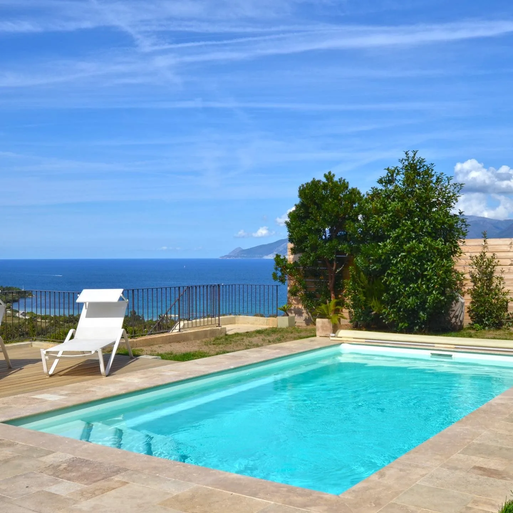
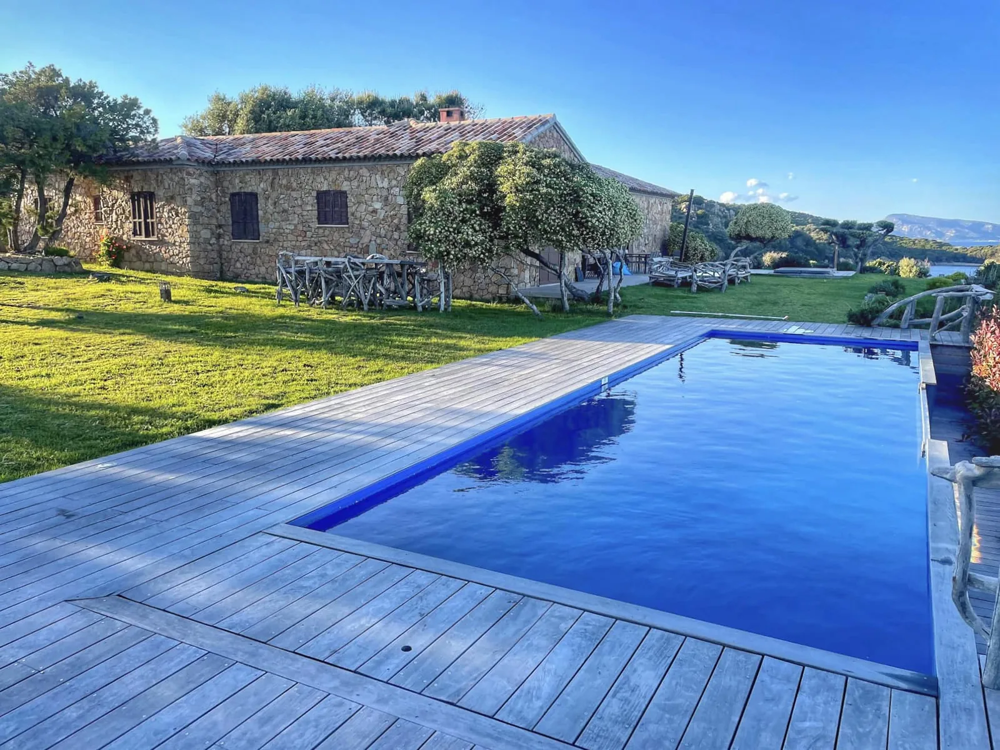
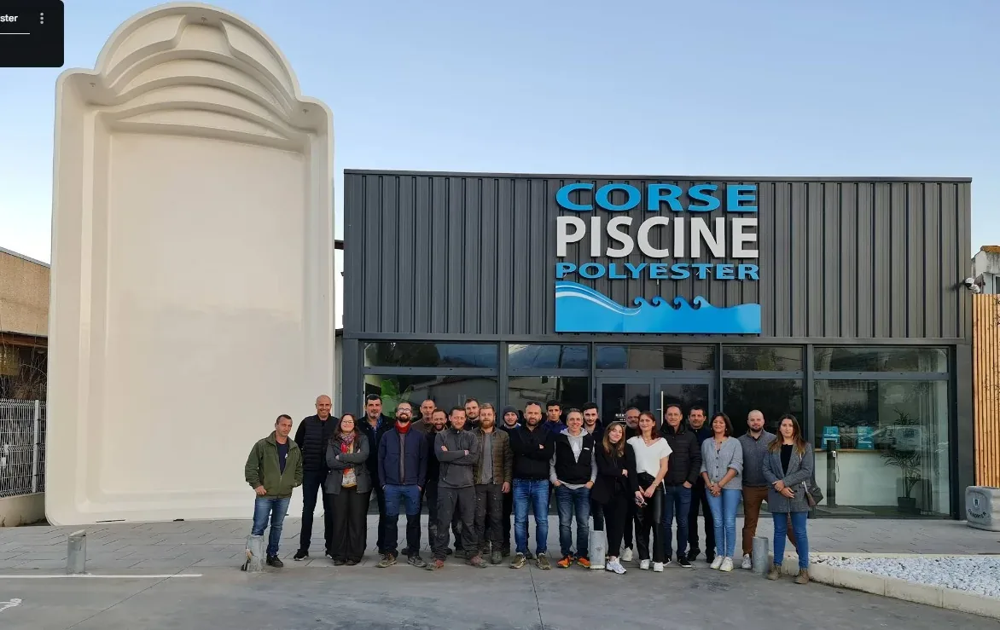
01
Accès chantier
02
Implantation
03
Règles locales
LE VRAI DÉPART DU PROJET
Le bon projet doit donner envie, puis rester clair.
Le modèle compte, mais le résultat se joue aussi dans l’intégration : soleil, vue, circulation autour du bassin, accès, démarches et budget. CPP vérifie ces points chez vous avant de vous orienter vers un devis sérieux.
Voir si mon extérieur s’y prête
Un conseiller local vous rappelle pour vérifier les premières informations avant le déplacement.
FORMATS POPULAIRES
Trois formats très demandés. Trois façons de profiter de l’extérieur.
10m², 6x3, 7x3... ces formats reviennent souvent parce qu’ils répondent à des usages différents : coin baignade discret, confort familial, résidence secondaire ou location. Le bon choix dépend ensuite de l’espace, de l’accès, de la circulation autour du bassin et des règles locales.
Photos à titre d’inspiration. Le format exact est validé lors de l’étude terrain.
Glissez pour comparer les formats
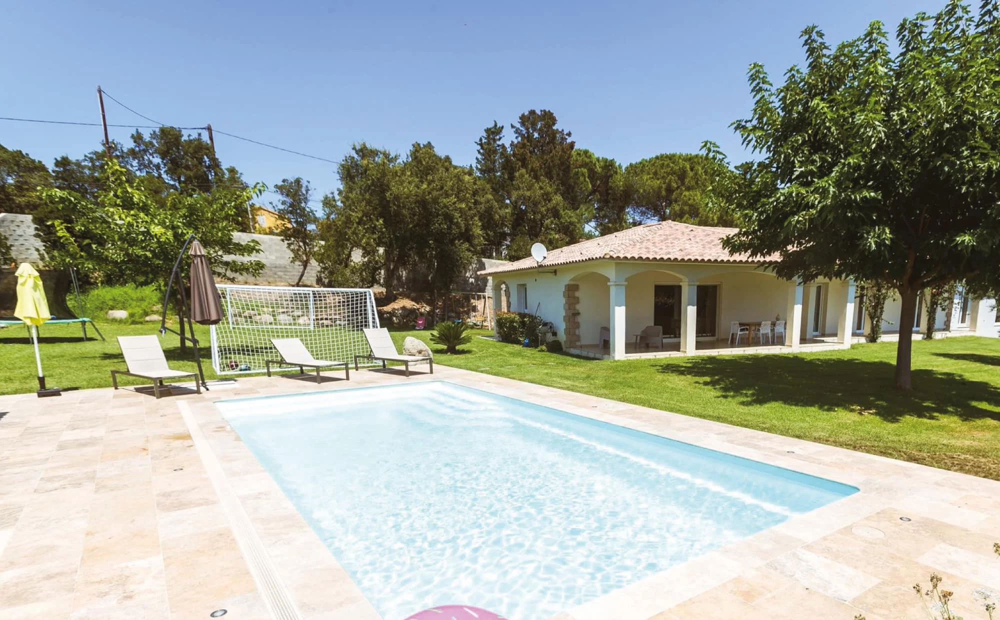
10m²
Pour optimiser un petit extérieur
Une piste intéressante quand l’espace est compté, pour une résidence principale, secondaire ou un coin baignade plus discret.
À partir de 7 750 € TTChors terrassement, accessoires, options et promo
- À vérifier selon la commune, le PLU et la situation du terrain
- Intéressant pour cadrer les démarches sans approximation
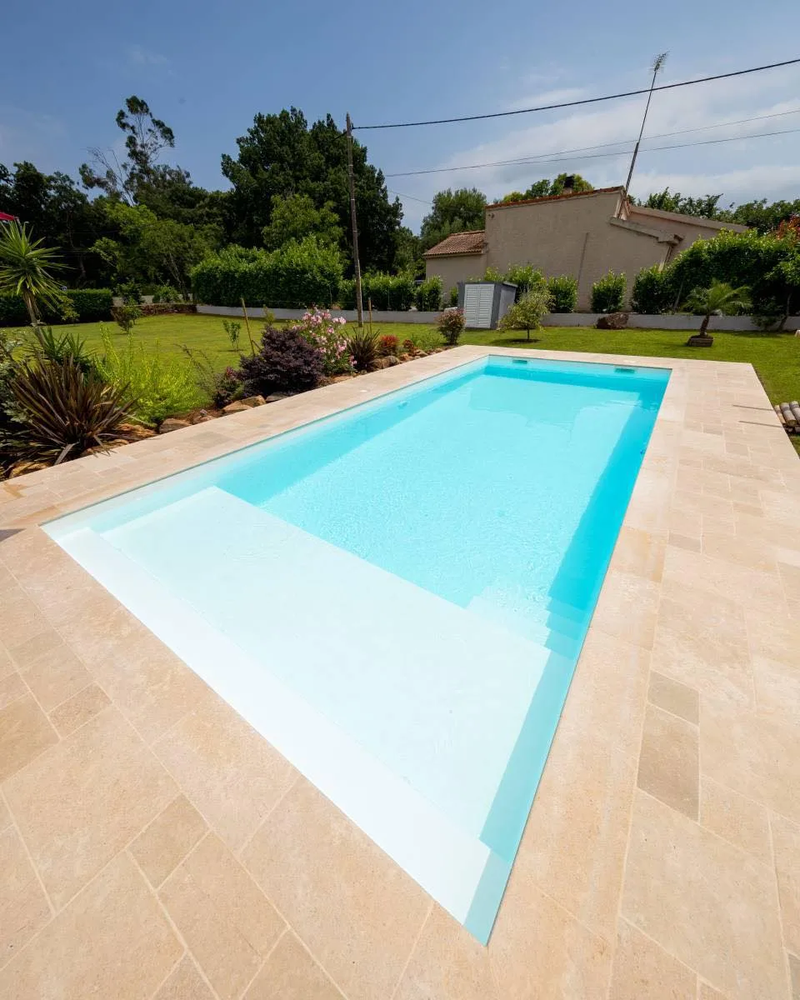
6x3
L’équilibre familial
Un format souvent recherché pour profiter d’un vrai confort de baignade, tout en gardant un jardin lisible et fluide.
- À valider avec l’accès et l’implantation
- Adapté aux projets familiaux et résidences secondaires
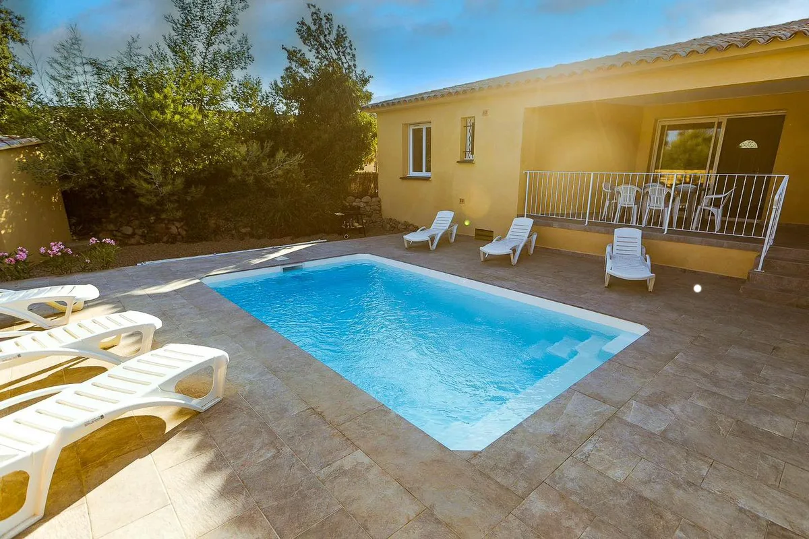
7x3
Plus d’aisance, sans perdre la ligne
Une option confortable lorsque le terrain permet de garder une belle circulation autour de la piscine et de la terrasse.
- À confronter à la pente, au soleil et aux accès
- Intéressant pour confort familial ou location saisonnière
PRIX & DEVIS
Un prix clair commence par les bons repères.
Une piscine coque ne se résume pas au prix du bassin. En Corse, le budget dépend aussi de l’accès, du terrassement, du modèle, des équipements, des finitions et des contraintes du terrain.
Un projet complet évolue selon ces éléments. L’étude à domicile sert à éviter les estimations hors contexte et à comprendre ce qui compte vraiment pour votre maison.
Des solutions de financement peuvent aussi être étudiées via organisme partenaire, sous réserve d’acceptation.
Estimer mon budget avec CPP Estimer mon budget
MINI PISCINE 10M²
À partir de 7 750 € TTC
hors terrassement, hors accessoires et options, hors promotion, selon modèle, accès et conditions du projet.
PROJET POSÉ
Autour de 15 000 €
repère indicatif selon terrain, accès, modèle, équipements, finitions et options validés lors de l’étude.
Modèle
+
Terrain
+
Accès
+
Finitions
10m², 6x3, 7x3 ou autre format selon votre terrain et votre usage.
Livraison, passage, contraintes d’accès et organisation sur place.
Terrain plat, en pente, rocheux ou à préparer avant la pose.
Filtration, sécurité, confort, options utiles et niveau de finition.
COQUE POLYESTER
Un bassin monobloc, préparé en atelier, pensé pour un chantier plus maîtrisé.
Une coque polyester est fabriquée avant d’arriver chez vous. Le projet se joue donc sur deux choses : choisir le bon bassin, puis préparer sérieusement le terrain pour que la pose se fasse dans de bonnes conditions.
Bassin monobloc
Forme préparée en atelier
Pose après préparation du terrain
Bassin fabriqué à la commande, selon la gamme France Piscines Composites.
Formes, escaliers et finitions choisis dans une gamme maîtrisée.
Garanties fabricant selon conditions, avec documents applicables à vérifier au devis.
Garantie décennale par capitalisation selon documents fabricant et assurances applicables.
La coque simplifie une partie du chantier. Le bon cadrage, lui, sécurise tout ce qui l’entoure.
Vérifier si la coque convient à mon projetVérifier mon projet
Pourquoi CPP
Une équipe locale pour un projet qui se joue sur place.
Vous ne parlez pas à une plateforme nationale. Vous échangez avec une équipe présente sur l’île, capable de regarder l’accès, l’organisation du chantier et le suivi après la pose avant d’avancer un projet.
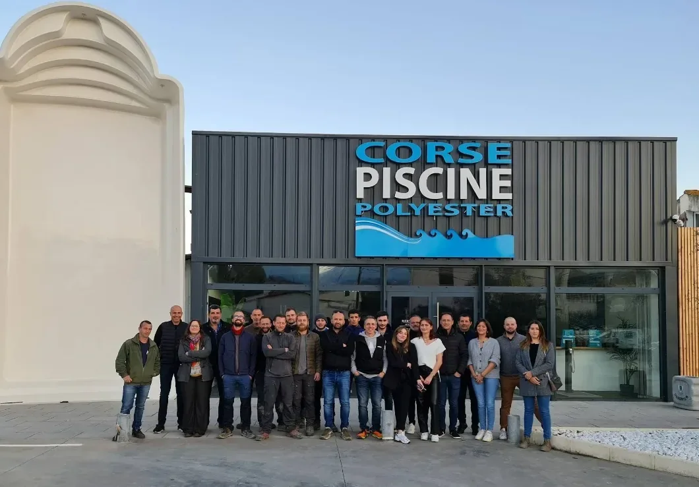
Équipe locale
sur le terrain
Piscine coque polyester en Corse
Distributeur exclusif en Corse
Selon diagnostic et conditions d’accès
4 points de contact en Corse
Prunelli-di-Fiumorbu / Migliacciaru, Ventiseri / Travo, Borgo et Ajaccio.
Déplacement sur toute la Corse.
Réalisations locales
Des piscines pensées comme des lieux de vie, pas comme de simples bassins.
Ce que ces projets montrent
- Une piscine doit créer un vrai lieu de vie, pas seulement remplir un espace.
- La terrasse, la vue, l’ombre et les usages changent l’ambiance du projet.
- Les inspirations servent à choisir une direction avant de vérifier ce qui marche chez vous.
Photos d’inspiration. Format validé sur place.
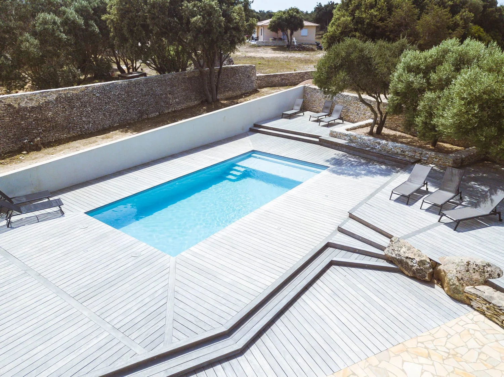
Glissez pour voir d’autres inspirations →
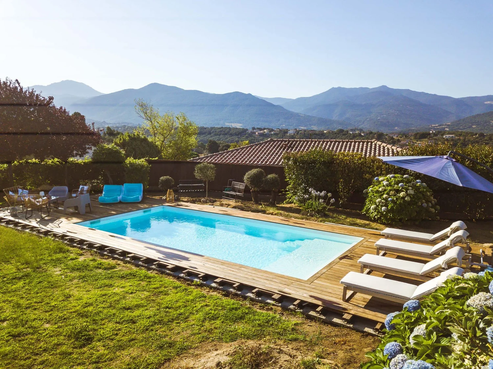
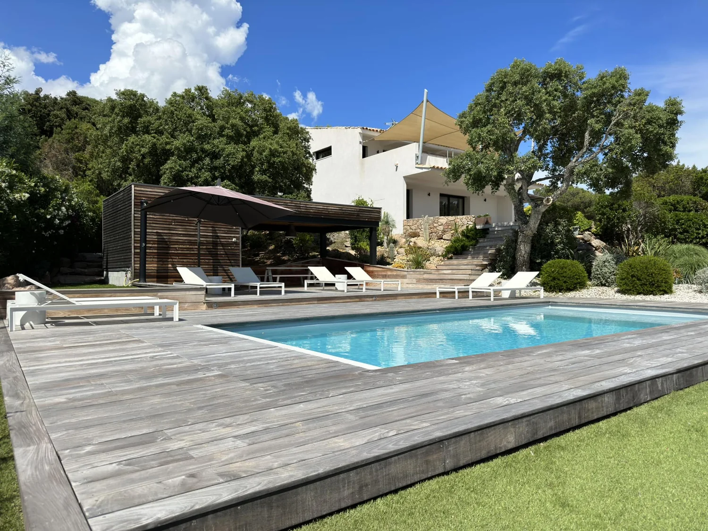
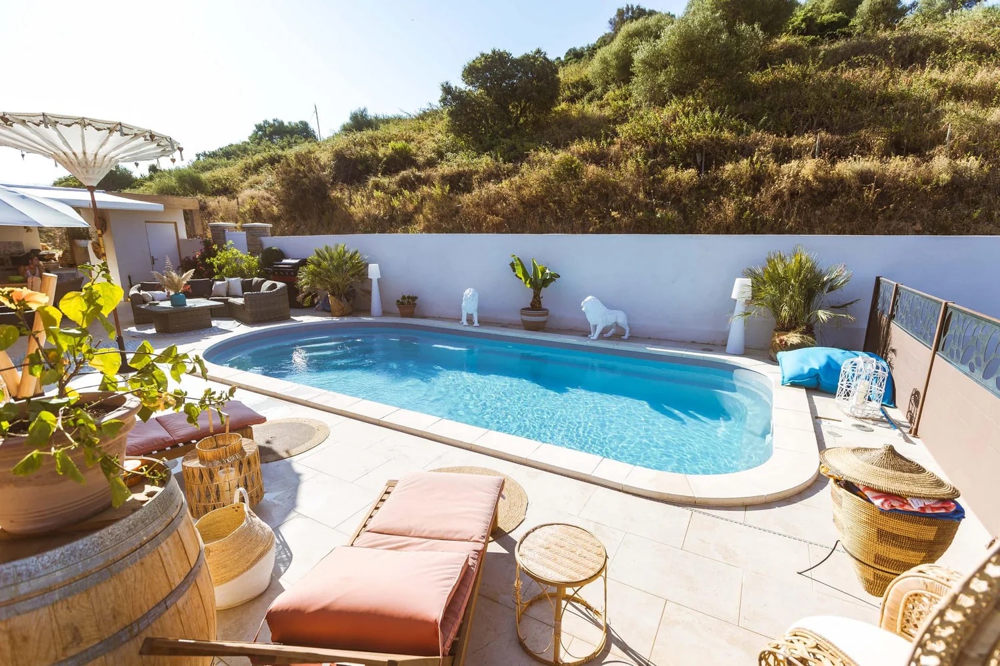
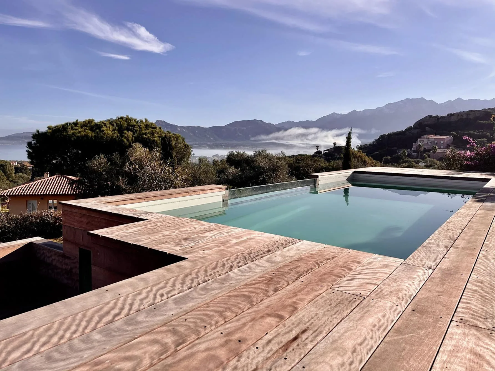
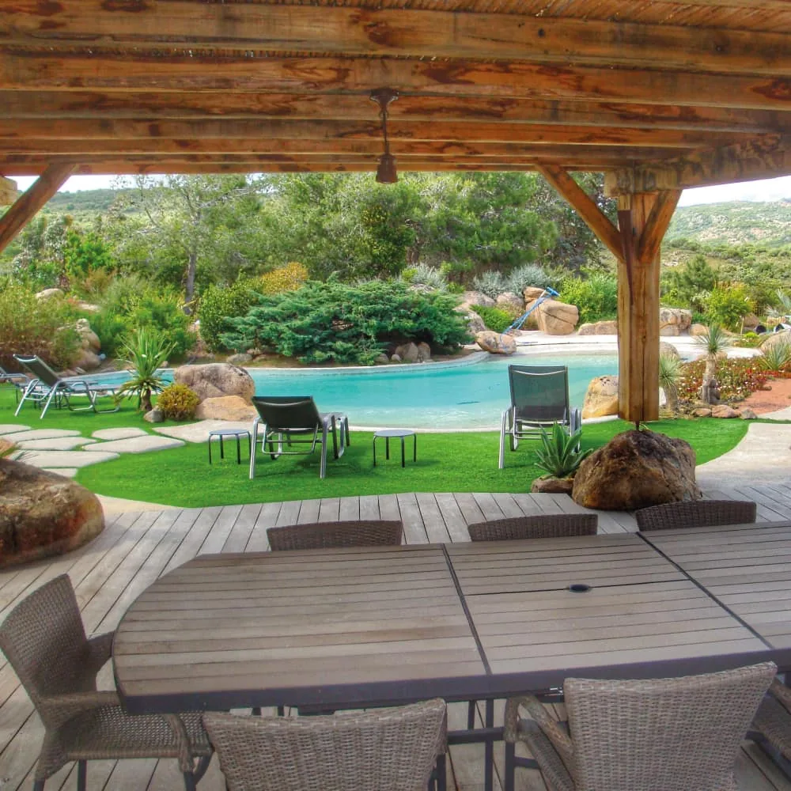
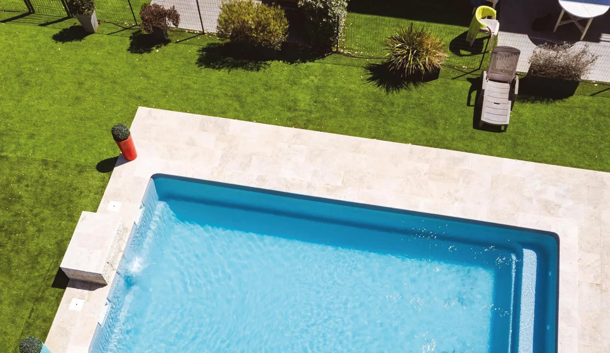
Le bon projet n’est pas seulement celui qui vous plaît en photo. C’est celui qui s’adapte à votre accès, votre extérieur et votre façon de vivre la maison.
Faire étudier un projet similaire
PROCESS
De l’envie au devis, sans avancer à l’aveugle.
Vous décrivez le résultat recherché, CPP vérifie les points qui influencent le budget et vous aide à avancer vers une proposition claire.
DEMANDE
Vous décrivez le projet
Commune, format envisagé, délai, type de maison et premières contraintes d’accès.
RAPPEL
Un conseiller vous rappelle
L’objectif est de vérifier les informations essentielles et d’éviter un devis vague ou hors contexte.
ÉTUDE TERRAIN
CPP vérifie le terrain
Accès, pente, implantation, usage, démarches et budget sont regardés avec plus de précision.
DEVIS
Vous recevez un devis cadré
Le devis tient compte du bassin, du terrain, des options et des conditions réelles du projet.
Ce n’est pas un configurateur automatique. C’est une première étape pour cadrer votre projet avant de vous engager.
Faire cadrer mon projet
À clarifier avant devis
Les points à clarifier avant d’avancer.
Budget, financement, déclaration, pose, SAV, garanties : ce sont souvent les sujets qui créent de l’incertitude. CPP vous aide à les cadrer avant de vous orienter vers un devis sérieux.
Clarifier mon projet avant devis
Un conseiller local vous rappelle pour vérifier les premières informations.
Budget réel
Le budget dépend du bassin, de l’accès, du terrassement, des équipements et des finitions.
Financement
CPP vous accompagne pour étudier des solutions via organisme partenaire, sous réserve d’acceptation.
Déclaration
Les démarches dépendent de la commune, de la surface, du PLU et de la situation du terrain.
Pose
La pose de la coque peut être rapide lorsque le terrain est prêt et l’accès validé. Hors terrassement.
SAV
Intervention SAV sous 48h ouvrables, selon diagnostic et conditions d’accès.
Garanties
Documents fabricant et assurances à vérifier au devis selon le périmètre applicable.
Clarifier mon projet avant devis
Un conseiller local vous rappelle pour vérifier les premières informations.
Comparer sans se tromper
Un devis rapide rassure. Un projet clair se construit autrement.
Un prix affiché donne une première idée. Mais entre accès, commune, implantation, usage, financement et finitions, le devis utile est celui qui colle vraiment à votre maison.
Approche CPP
Recommandé pour un projet en Corse
Étude locale à domicile
- Terrain, accès et implantation vérifiés avant de parler modèle.
- Commune, pente et contraintes regardées sur place.
- Devis construit selon les conditions réelles observées.
- Interlocuteur local en Corse pour cadrer la suite.
Estimation rapide
Utile pour une première idée
- Donne un premier ordre d’idée.
- Rapide, mais souvent basé sur les informations déclarées.
- À compléter si l’accès, la pente ou la commune peuvent changer le projet.
- Ne remplace pas une lecture terrain.
À gérer soi-même
Peut convenir dans certains cas
- Possible si vous pilotez vous-même le chantier.
- Demande plus de coordination, de temps et de vigilance.
- Les coûts annexes peuvent apparaître plus tard.
- Moins adapté si vous voulez un interlocuteur local.
Le meilleur devis n’est pas forcément le plus rapide. C’est celui qui reste clair quand le budget, l’accès et le chantier deviennent réels.
Avis clients
Des avis Google, et de vrais projets derrière.
Des clients parlent de projets menés en Corse, de l'écoute de l'équipe, du suivi et du sérieux apporté avant comme après la pose.
4,7/5
Note moyenne sur Google
avis clients vérifiés
Parler de mon projet avec un conseiller localParler de mon projet
Extraits d'avis Google publics. Textes raccourcis pour la lisibilité.
Glissez pour lire d'autres avis →
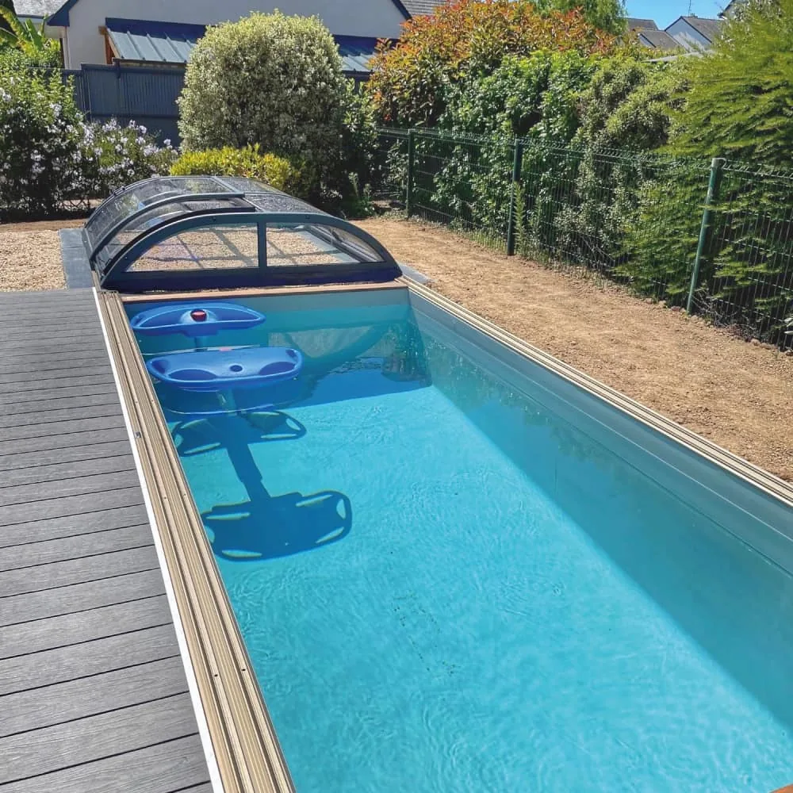
Avis Google
“Travail sérieux, équipe efficace et professionnelle !”
“Je recommande vivement !”
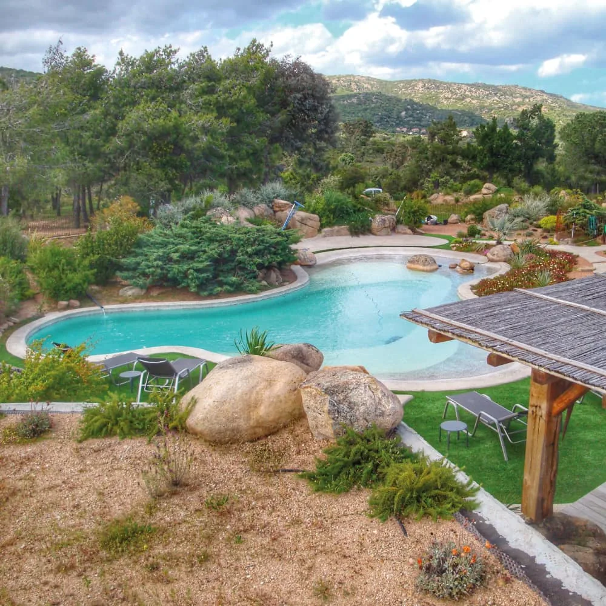
Avis Google
“Vous êtes à la bonne adresse.”
“Tout a été maîtrisé de A à Z.”
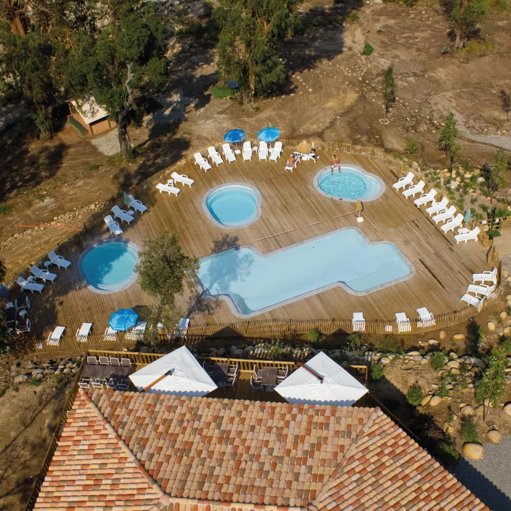
Avis Google
“Le sav au top.”
“Une très bonne équipe du commercial au technicien.”

Avis Google
“Très à l'écoute du client.”
“Une gentillesse naturelle. Un après-vente compétent.”
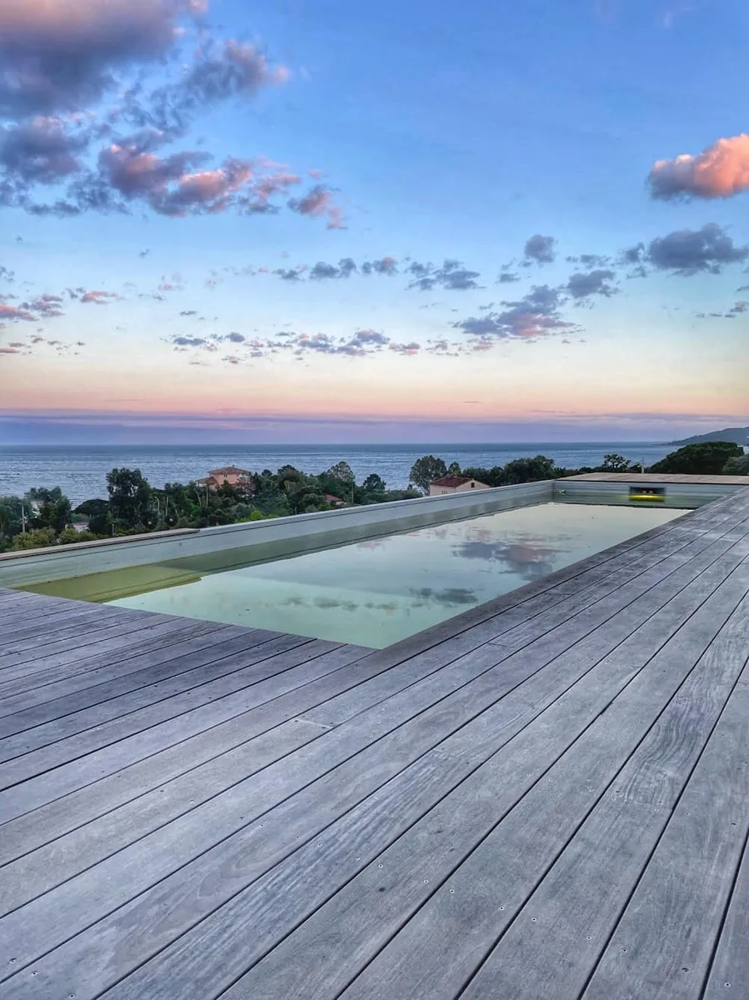
Avis Google
“Des professionnels qui se donnent du mal.”
“Pour vous dépanner.”
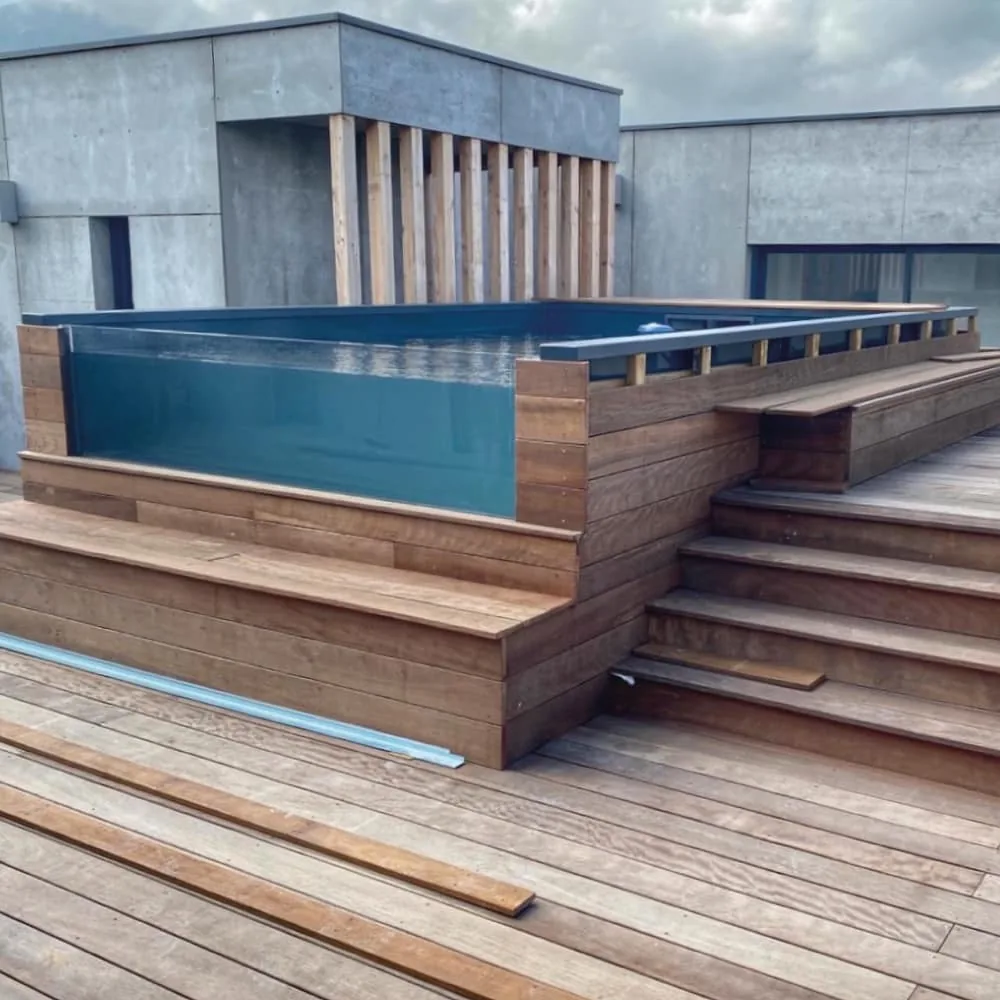
Avis Google
“Une équipe très impliquée.”
“Un chef d'entreprise compétent, attentif et humain.”
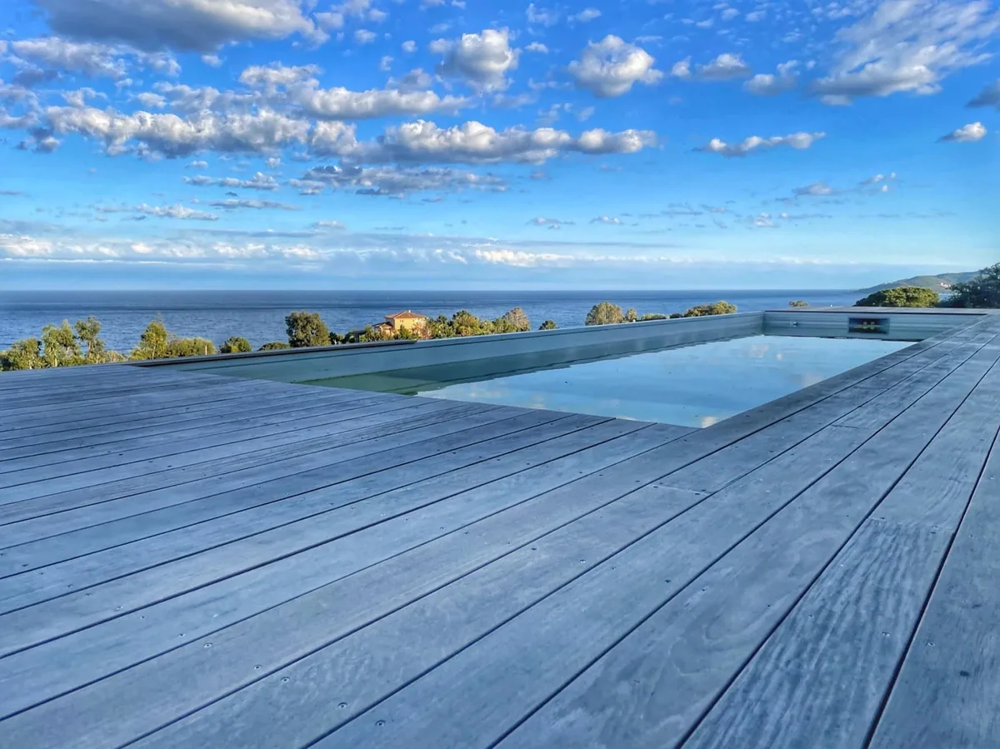
Avis Google
“Parfait du début à la fin.”
“Merci pour votre bon travail.”
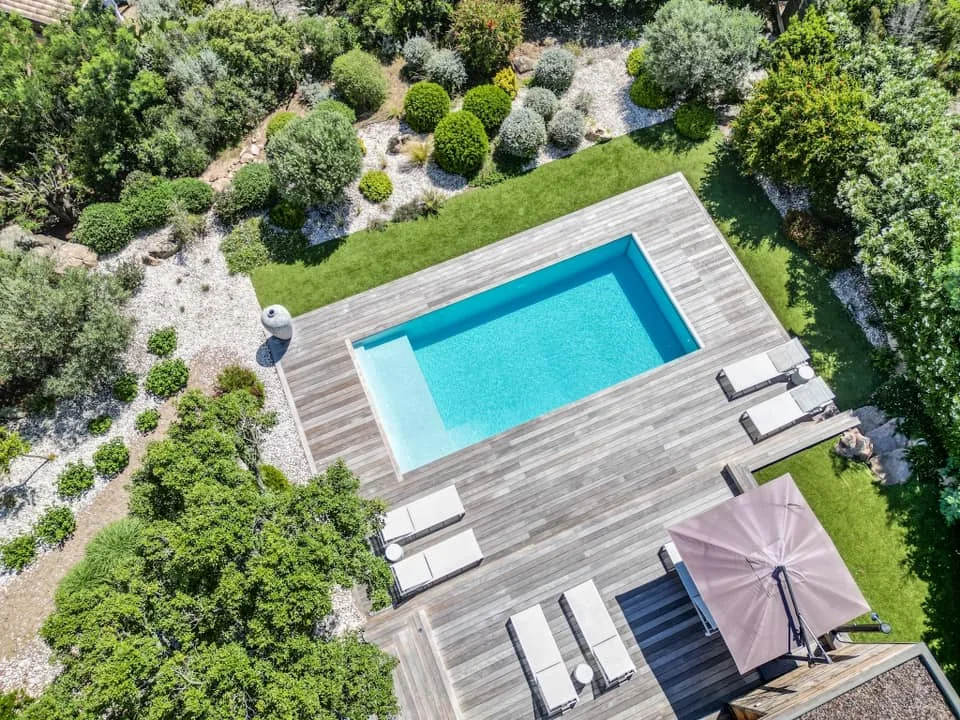
Avis Google
“Professionnalisme et compétence.”
“Vous pouvez vous adresser à cette enseigne en toute confiance.”
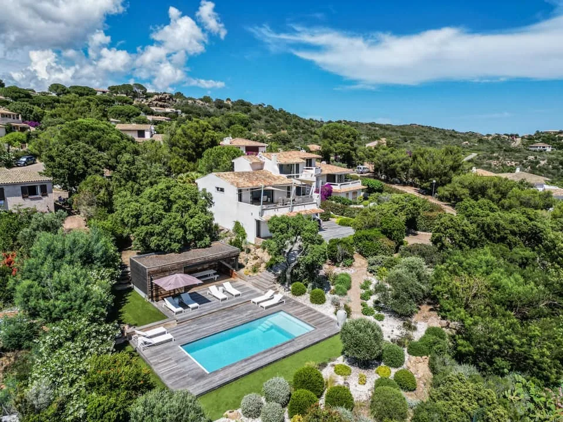
Avis Google
“Très bonne enseigne de piscines en polyester.”
“SAV de qualité. Accueil très aimable et compétent.”
Questions utiles
Les questions à poser avant de choisir votre piscine coque.
Budget, terrain, déclaration, format, pose, SAV : les bonnes réponses se vérifient avant devis, pas une fois le chantier lancé.
Une mini piscine 10m² peut être proposée à partir de 7 750 € TTC, hors terrassement, hors accessoires et options, hors promotion, selon modèle et conditions du projet. Un projet de piscine coque posée évolue ensuite selon l’accès, le terrassement, les équipements et les finitions. L’étude à domicile permet de cadrer le budget selon votre terrain réel.
Oui, l’étude terrain est offerte et sans engagement. Elle sert à vérifier les premières informations du projet avant de vous orienter vers un format, un budget et une suite réaliste.
Non, ce point doit être vérifié selon la commune, le PLU, la situation du terrain et le projet exact. Le format 10m² peut simplifier certaines démarches, mais il ne doit pas être présenté comme une règle automatique.
CPP peut vous aider à identifier les points à vérifier et vous orienter dans les démarches selon votre projet. Les règles dépendent notamment de la commune, de la surface, du PLU et de la situation du terrain.
Le bon format dépend de l’espace disponible, de l’accès, de l’usage prévu, de la circulation autour du bassin et du budget. L’étude terrain permet de comparer les formats avec votre maison, pas seulement sur catalogue.
La pose de la coque peut être rapide lorsque le terrain est prêt et l’accès validé. La pose de la coque peut se faire en 1 jour et demi, hors terrassement et hors préparation du terrain.
L’accès est justement l’un des premiers points vérifiés. Passage, pente, largeur, organisation du chantier et contraintes de livraison peuvent influencer le format, le devis et la faisabilité.
Les garanties fabricant, documents d’assurance et conditions applicables sont à vérifier au devis selon le modèle, le périmètre du projet et les documents fournis.
CPP intervient en SAV sous 48h ouvrables, partout en Corse, selon diagnostic et conditions d’accès.
Oui, un projet peut être étudié pour une résidence principale, secondaire ou un gîte. L’usage prévu aide à choisir le format, les équipements, la sécurité, l’entretien et le niveau de finition.
Prochaine étape
Votre projet piscine doit donner envie, puis rester clair jusqu’au devis.
En Corse, le bon projet commence par une envie simple : profiter davantage de votre maison. CPP vous aide à cadrer le format, le budget, l’accès et les contraintes réelles avant de vous orienter vers la suite.
Projet en Corse
Étude offerte
Devis cadré